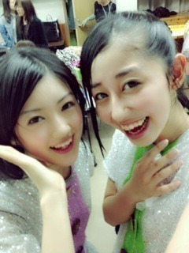

| 2012/10 26 Fri | Q&Aだぜいっっ(´>∀<｀)ゝ |
おはようヽ(^ω^)ﾉ
質問いっぱいありがとうございました！！！

どしどし返していきまーす♡
Q&Aだぜいっっ
 オススメの少女漫画教えてよ‼
男性でも読める漫画ってある⁇
オススメの少女漫画教えてよ‼
男性でも読める漫画ってある⁇
 この質問いっぱいだった(o^^o)
透明人間になったら何をする⁇
向こうが見えてるものをわざと動かしてみたり
この質問いっぱいだった(o^^o)
透明人間になったら何をする⁇
向こうが見えてるものをわざと動かしてみたり
顔に落書きしてみたり
イタズラしたい∩^ω^∩！！！笑
バスケやってる人ってどう思う⁇
ちはるんバスケ好き⁇
バスケはやるのも、見るのも、
やってる人も好き！！！
小学校の頃ミニバスやってたの♡←
ちはるん、髪が長くて似合ってるけど、ばっさり切る予定はあるのかな⁇
ばっさりは切らないけど肩よりちょい下くらいに丸く切りたい(> <)♡
文化祭AKBの曲じゃなくて、乃木坂の曲やればよかったのに‼
恥ずかしかったの⁇
そりゃー恥ずかしいよー(*/ω＼*)
学校の人に見られる訳だからね‼///←
ファンにはどんな言葉をかけてもらうのが一番嬉しいですか⁇
いつも見てるよ‼
一番好きです‼
とか嬉しいなー∩^ω^∩
ちゃんと見ててくれるのね♡
って安心する

乃木坂は料理上手が少ないイメージだけど、ちはるんはなんか料理したりする⁇得意料理は⁇
え、ちょw‼
これはクッキングモンスターの仕業か(｢･ω･)｢がうっち
料理するよー！！！
卵焼きとかピーマンの肉詰めはあたしに任せんしゃい

でも普段はお菓子の方がよく作る‼
マフィンとか好きー(o>ω<o)
女子高生がキティちゃんの着ぐるみで行ったら頭ポンポンしてくれますか⁇
なんて可愛いこと言ってくれるのー♡
するよするよしちゃうよ(*/ω＼*)
ちはるんの地元ネタってありますか⁇
埼玉には草加せんべいがあるよー
十万石饅頭とか←
美味しいよーヽ(^ω^)ﾉ
メンバーを家族、彼氏、彼女、ペットにするとしたら誰⁇
父ななみ、母まいまい、姉いもたまコンビ、兄にゃにゃせ、妹あすか、弟いこま。
彼氏あみ、彼女ひなちま、ペットまあや
こんなのが理想かな(*´Д`*)笑
先着10質問に答えてみた(//ω//)
残りもまだまだ返すよー‼
質問返しって楽しいね

あと特別もういっこ(ﾉ)ω(ヾ)
明日は横浜個別‼ってことでー
握手会では何を話せばいいかな⁇
いつもコメントくださってるお名前とか聞けたら嬉しい∩^ω^∩♡
あとは皆さんの好きなものとか趣味とか語っちゃってください

質問とかも受け付けまーす(о´∀`о)
明日、楽しみましょね

あ、ダテメしようかと思ってるから
メガネかけてー(*/ω＼*)とか
いつものまんまー(*/ω＼*)とか
リクエスト答えます


昨日はメンバー紹介でめっちゃいいこと書いてくれた(´；ω；`)
最近より一層仲良しーー♡のひなちまと
ご飯食べたりお喋りしたりお勉強したりした

ひなちまめっちゃ可愛いんだよー♡
最近より一層大人っぽくなったし
中学生って怖いねー( ；∀；)
そして
今日はちーむＮでご飯です∩^ω^∩笑
今日もがんばろっねっ

ばいるんっ
るんるんっ
ちはるんっ
(´>∀<｀)ゝ
コメント(82)
2012/10/26 08:24